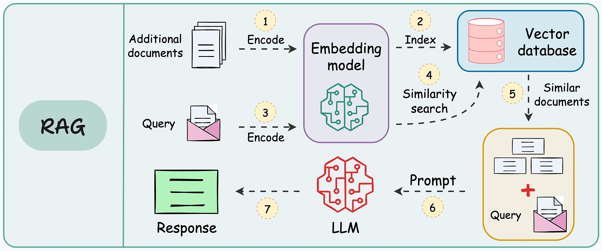

Portfolio
Artificial Intelligence & NLP
Local-first RAG Pipeline with Python & Ollama
Developed a high-performance Retrieval-Augmented Generation (RAG) system focused on data sovereignty. This project enables intelligent Q&A over private document repositories (PDF, Docx) without relying on cloud-based LLM providers.
- Orchestration: Built with LangChain to handle complex document chunking and retrieval chains.
- Vector Database: Integrated ChromaDB for high-dimensional vector storage and semantic search.
- Inference: Optimized local execution of Llama 3 via Ollama, achieving low-latency responses.

Figure 1: End-to-end RAG workflow from document ingestion to local LLM response.
Full-stack Development
ShopZues - Scalable E-commerce Platform
A comprehensive enterprise-grade e-commerce solution built with Laravel 10. The system handles complex business logic, from multi-variant inventory management to automated financial reconciliation.
- Infrastructure & Performance: Optimized system response time by leveraging Redis for distributed caching, session management, and handling high-concurrency background job queues.
- Security & Authentication: Implemented a secure authentication layer using JWT (JSON Web Tokens) for stateless API communication and OAuth 2.0 for protected resource access and third-party integrations.
- Integrations: Seamlessly connected with VNPAY for secure payments, Giao Hàng Nhanh (GHN) for logistics, and Cloudinary for dynamic media optimization.
- Messaging: Utilized Brevo (formerly Sendinblue) for automated transactional emails and OTP verification services.
HRM & Internal Management System
A specialized Internal Tool focused on optimizing human resource workflows, shift automation (Administrative/Morning/Afternoon), and Role-Based Access Control (RBAC).